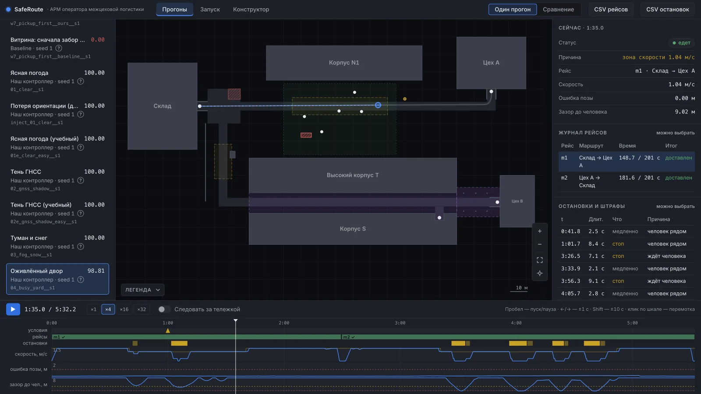

Беспилотная платформа без ГНСС
Безопасный
маршрут
Возит грузы между складом, цехами и зарядкой без спутника, в тумане и снеге и рядом с людьми.
Кейс «Безопасный маршрут» · финал КосмоХакатона 2026, Москва

2
МЕСТО